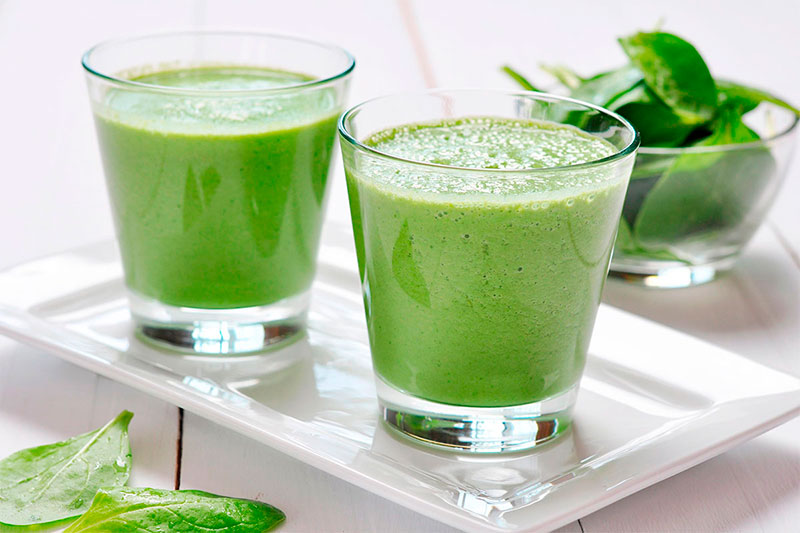
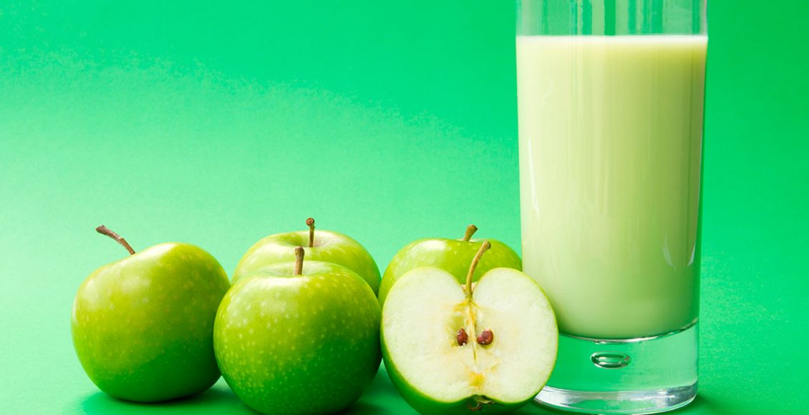

Licuado de Piña con Apio
Junio 27 del 2017
Actualmente, existen diferentes tipos de recetas de licuados para bajar de peso, sin embargo, tomar un licuado de piña y apio para adelgazar puede resultar muy efectivo. Para poder elaborar esta receta solamente necesitarás un vegetal, una fruta, agua y un poco de hielo. Además, prepararlo es muy fácil, lo único que tienes que hacer es lavar los ingredientes y agregarlos en una licuadora, así que no tienes pretextos para adelgazar de manera rápida, efectiva y sana.
Elaborar un licuado de piña y apio para bajar de peso es muy fácil, solo necesitas licuar los siguientes ingredientes:
*Tres tallos de apio.
*Tres rodajas de piña sin cascara.
*Una taza de agua.
*Cubitos de hielo.
Dejanos tus comentarios:

Jose_225: Me ayudo mucho con mi dieta!
Itzel_MX: No olviden acompañar de esta deliciosa bebida con 30 minutos de ejercicios y buena alimentacion.
hd_paz: delicioso sabor y gran valor nutricional! A seguirlo probando!.
Como preparar un rico Batido de Manzana
Enero 01 del 2017
Ingredientes:
*Dos manzanas rojas.
*Dos vasos de leche entera, o si prefieres descremada.
*Dos cucharadas de azucar, o bien algunas gotas de endulzante light.
*Para decorar, usar canela en polvo, o tambien vainilla, caramelo liquido, etc.
Metodo de preparacion:
Para elaborar esta receta primero tienes que lavar bien las manzanas, de preferencias rojas, partirlas en pequeños pedazos y agregarlas en una licuadora. Después añade la leche y el azúcar, y si prefieres puedes echarle un poco de vainilla o canela, para que le des más sabor al batido.
Luego licúa durante varios segundos, hasta conseguir una mezcla un poco espesa y espumosa, asegúrate de que no quede muy líquida. Por último vierte la mezcla en el vaso donde vayas a servir, y decóralo a como desees.
Dejanos tus comentarios:
Vota_YES!: Da click aqui para un video gracioso!
Juanita_la_cubanita: Alguien ha probado este batido?.
eliza_2234: No hay nada mejor que la manzana, mezclalo con canela y sabras como sabe la gloria..